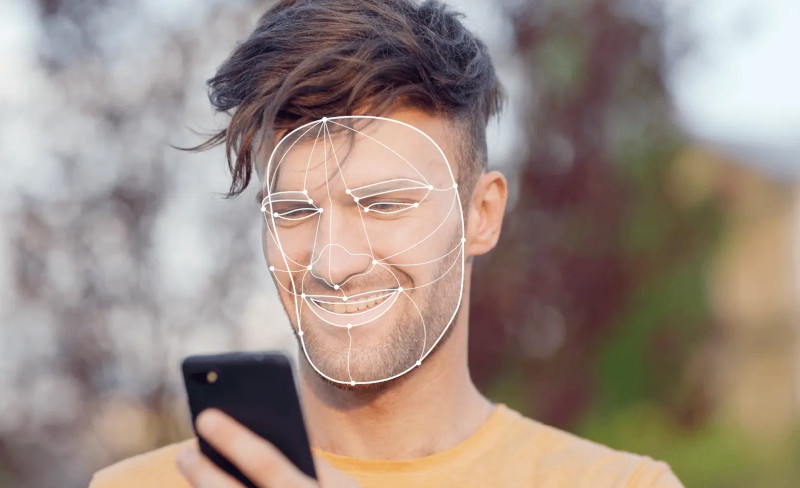

Detect faces and locate facial features in real‑time video and image streams. Designed for sub‑millisecond processing, this model predicts bounding boxes and pose skeletons (left eye, right eye, nose tip, mouth, left eye tragion, and right eye tragion) of faces in an image.
